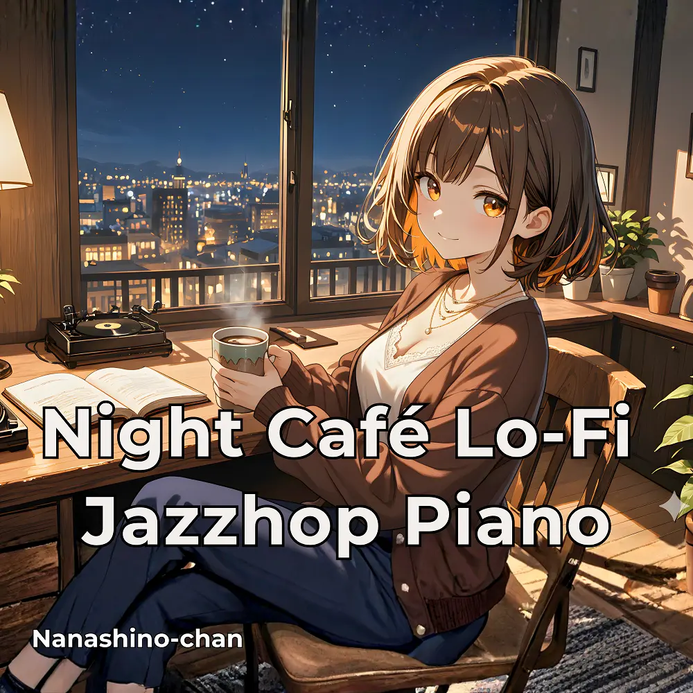

Lo-Fi · Jazzhop
Night Café Lo-FiJazzhop Piano
Nanashino-chan
Explore Night Café Lo-FiJazzhop Piano by Nanashino-chan: 24 instrumental tracks spanning Lo-Fi / Jazzhop. Start with Coffee Glow / Evening Breeze, preview the collection and find your favorites on streaming services.
2026-02-27 · Released · 24 tracks · Instrumental
Preview the album
The jacket stays here until you choose a track. Playback uses YouTube.
YOUTUBE PREVIEW
Choose a track to listen
The jacket stays here until you choose a track. Playback uses YouTube.
If playback is unavailable, open the album or track on the streaming service.
Find this album on streaming services
Links marked “search” open search results. Select the album or track on the service.
Track list 24
- 01Coffee Glow
- 02Evening Breeze
- 03Cozy Groove
- 04Moonlight Study
- 05Velvet Reflections
- 06Cup of Tranquility
- 07Dreamy Vinyl Echoes
- 08Quiet Streetlights
- 09Piano Whispers
- 10Soulful Moment
- 11Gentle Pulse
- 12Lantern Dreams
- 13Moonlit Flow
- 14Late Coffee Hours
- 15Velvet Groove
- 16Silent Jazzhop
- 17Night Breeze
- 18Gentle Reflections
- 19Warmth in Shadows
- 20Cafe Nostalgia
- 21Soft Lights
- 22Peaceful Path
- 23Midnight Jazzflow
- 24Dream Outro
Find a sound for your next post
Copy “Nanashino-chan + track title” and paste it into your social app’s music search. Availability depends on your region and account. Copying the name does not grant usage rights.